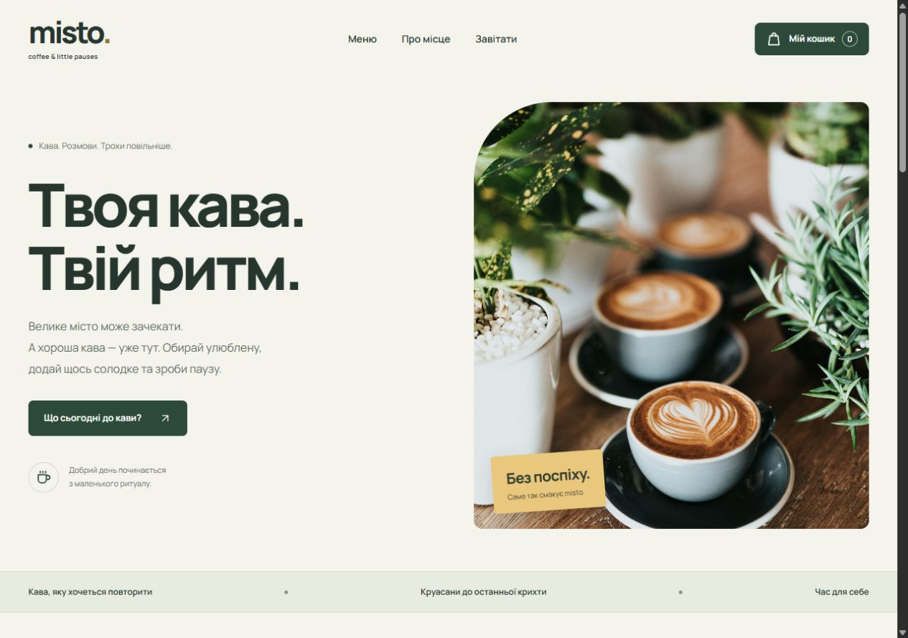
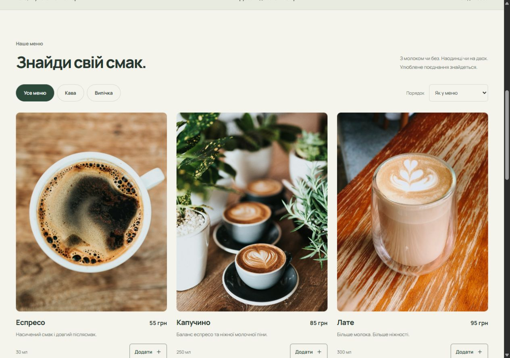
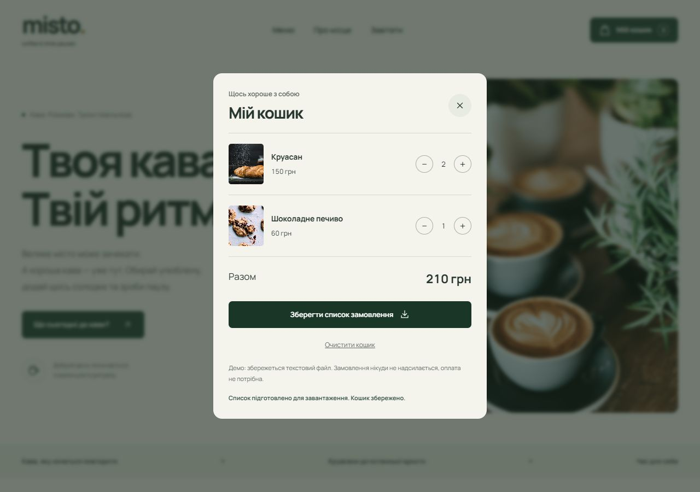
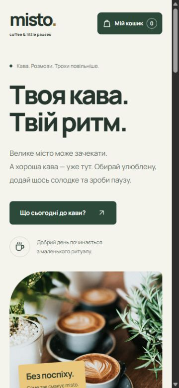

Сайти та лендінги
Представити послугу, показати товари та допомогти клієнту залишити заявку. Адаптую сторінку до телефона й додам зрозумілий шлях до контакту.
Наприклад: лендінг майстра, події або невеликого бізнесу.
Відкритий до перших замовлень
Розроблю сайт для заявок, панель для керування даними або бота, який збере товари, перевірить ціни й надішле сповіщення.
Оціню вартість після короткого опису задачі.
Книжковий каталог
£24.50£9.99
Приклад зі штучними даними — без запитів до магазину.
Послуги
Від сторінки для перших заявок
до автоматизації щоденної роботи.
Представити послугу, показати товари та допомогти клієнту залишити заявку. Адаптую сторінку до телефона й додам зрозумілий шлях до контакту.
Наприклад: лендінг майстра, події або невеликого бізнесу.
Зібрати заявки, товари чи інші записи в одному інтерфейсі. Додам таблиці, пошук, фільтри та форми для редагування даних.
Наприклад: панель обліку замовлень із пошуком за статусом.
Автоматично зібрати каталог у таблицю, порівняти ціни конкурентів і знайти зміни. Джерела, потрібні поля та частоту перевірки узгодимо до початку.
Наприклад: назви, ціни та наявність товарів у CSV або JSON.
Повідомляти про нові заявки, приймати дані через чат або надсилати результати перевірок. Зв’яжу бота з вашим сайтом чи базою даних.
Наприклад: повідомлення менеджеру після заявки з лендінгу.
Оціню вартість після короткого опису задачі. Напишіть, який результат потрібен, додайте приклад і бажаний термін — уточню обсяг, ціну та строки до початку роботи.
Обговорити задачу в TelegramІнструменти, з якими працюю
Портфоліо
Два вебпроєкти та три боти.
Скриншоти, живі сайти й відкритий код.

Сайт кав’ярні
Від першого знайомства з кав’ярнею до вибору улюбленої кави. Меню з категоріями, сортування за ціною та кошик, який зберігає вибір після оновлення сторінки.
Авторський концепт вигаданої кав’ярні. Реальні оплати й відправлення замовлень не підключені.



Натисніть на скриншот, щоб роздивитися деталі.

Сайт послуг
Зрозуміла пропозиція, послуги, приклади робіт і прямий контакт у Telegram. Локальні шрифти, SVG-іконки та інтерактивні демонстрації ботів.
Код сайту на GitHubТри навчальні проєкти з інтерактивними демо.
Збирає назви книжок, ціни, рейтинги та посилання з Books to Scrape. Проходить кілька сторінок і зберігає дані у CSV та JSON.
Два тестові товари. Натисни кнопку, щоб побачити результат експорту.
| Книжка | Ціна | Рейтинг |
|---|---|---|
| Demo Python Book | £24.50 | 4 / 5 |
| Automation & Bots | £18.00 | 5 / 5 |
Збережена ціна книжки — £24.50. Задай нову ціну для порівняння.
Додай витрату й перевір підсумок. Дані існують лише до оновлення сторінки.
Привіт! Допоможу порахувати витрати у гривнях.
Готово до запуску.
Це інтерактивна ілюстрація зі штучними даними. Python-боти запускаються окремо; Telegram потребує власного токена.
Як працюємо
Спершу домовляємося про результат.
Потім рухаємося по зрозумілих кроках.
Ви описуєте задачу, аудиторію та бажаний результат. Уточнюємо деталі й приклади.
Узгоджуємо функції, вартість і строки. Фіксуємо, що саме входить у роботу.
Створюю сайт або бота й показую проміжний результат для зворотного зв’язку.
Разом перевіряємо узгоджені сценарії. Виправляю знайдені помилки.
Передаю код та інструкцію, допомагаю із запуском і пояснюю, як користуватися.
Сайт, адмінпанель чи бот — опишіть потрібний результат.
Оціню вартість після короткого опису задачі.
Про мене
Я працюю під ім’ям Cryvex і починаю свій шлях у фрілансі. Беруся за невеликі сайти, лендінги, адмінпанелі та автоматизацію на Python. Починаю з обговорення задачі й узгодження конкретного результату.
У портфоліо — сайт кав’ярні Misto Coffee, цей сайт і три навчальні боти. Це власні проєкти, на яких можна оцінити дизайн і роботу інтерфейсу. Для ботів є відкритий код, інструкції та деморежими; основну логіку перевіряють автоматичні тести.
Подивитися перевірки на GitHub